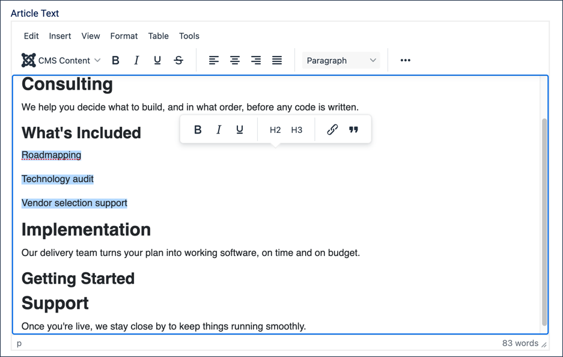
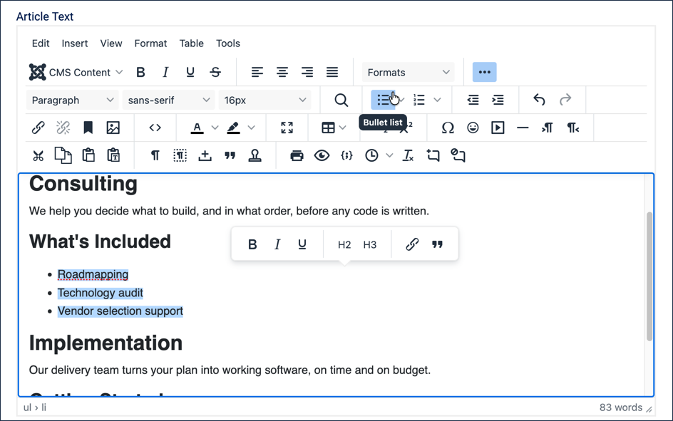
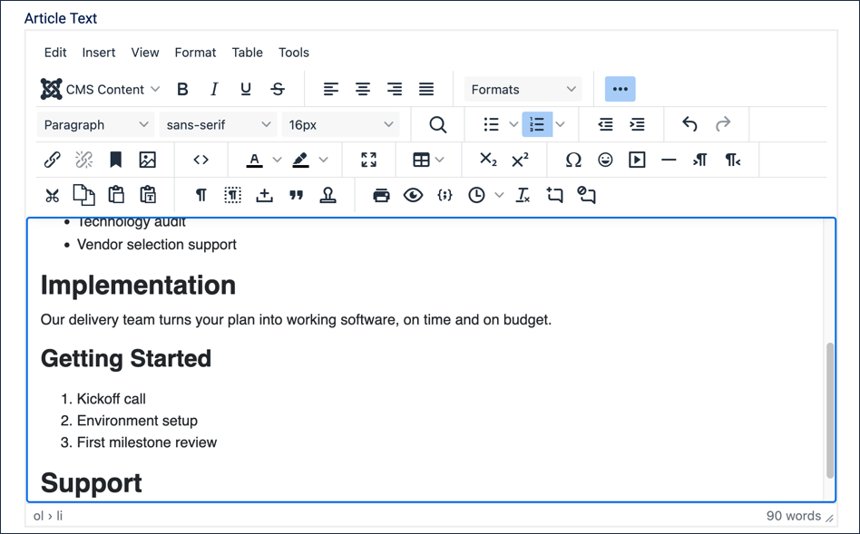
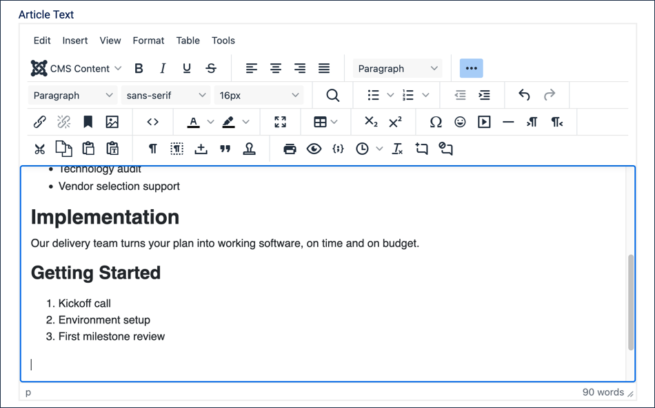
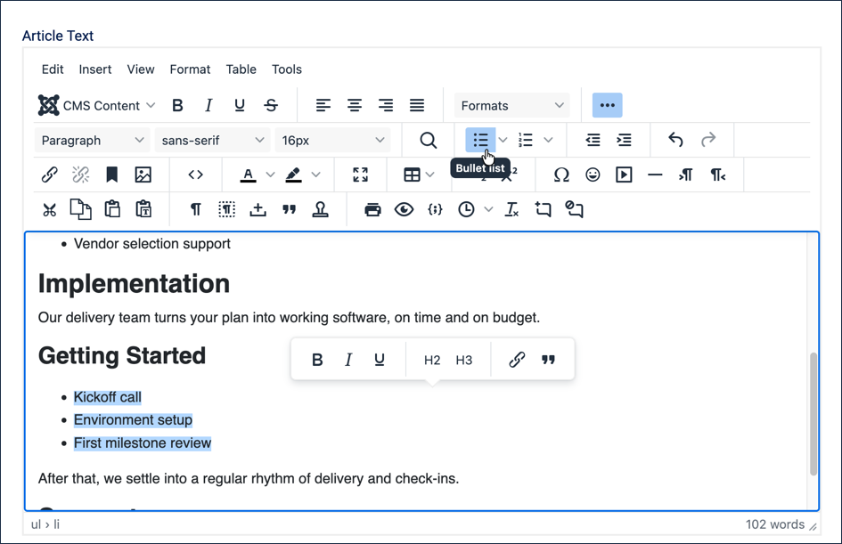
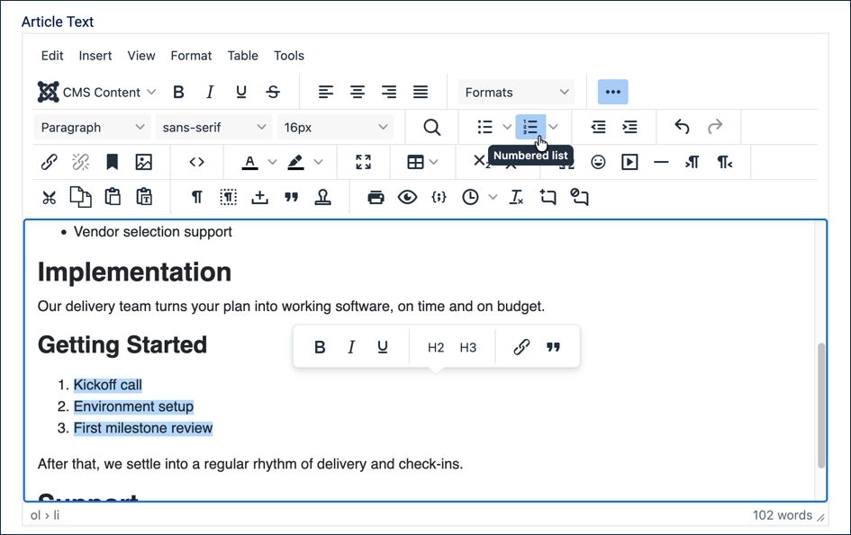
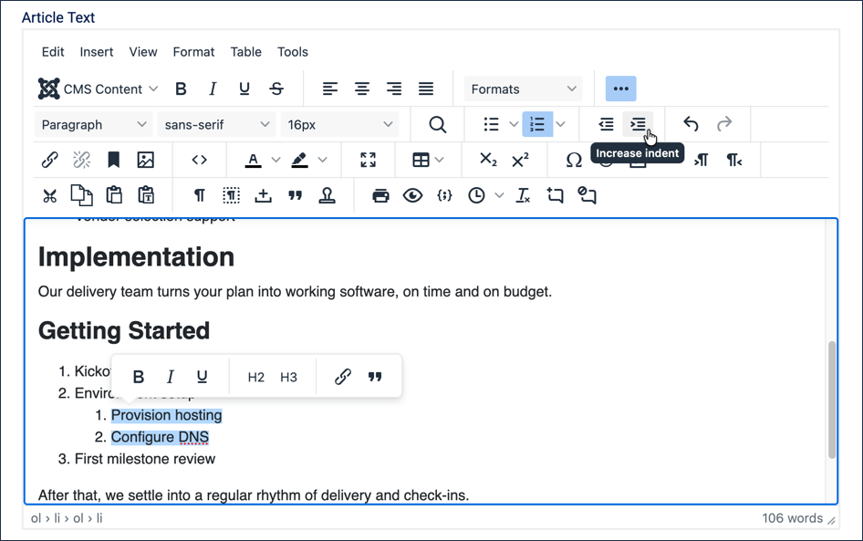
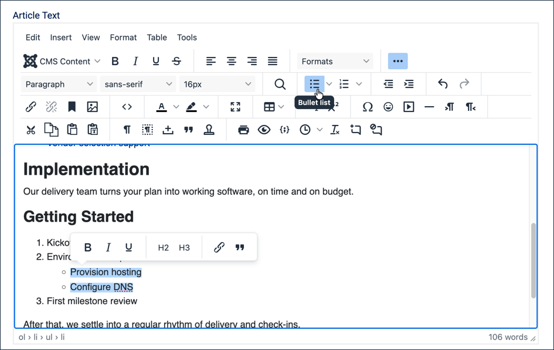

In this tutorial we'll fill in the two empty sub-headings left in the Our Services article — What's Included and Getting Started — with an unordered (bulleted) and an ordered (numbered) list. Along the way we'll cover several ways to build and manage lists in the editor: converting existing text into a list, typing a list directly, switching a list between bulleted and numbered, and nesting sub-items.
3.2 Headings creates the Our Services article's outline, including the What's Included and Getting Started sub-headings this tutorial fills in.
Steps
Log in to Joomla backend and navigate to the Home Dashboard.
In the Administrator Menu, click Content > Articles.
Click Our Services to reopen it for editing.
Building a List from Typed Paragraphs
One way to build a list is to type your items as ordinary paragraphs first, then convert them all at once.
Click at the end of the What's Included heading, then press Return to start a new line.
Type the first list item and press Return so it becomes its own paragraph. Repeat for the other two items:
Roadmapping
Technology audit
Vendor selection support
Select all three paragraphs.

The three items typed as separate paragraphs, selected and ready to convert
In the editor toolbar, click the Bullet list icon (the one with the bullets). Result: The three paragraphs become a bulleted list.

The three items converted to a bulleted list
Building a List by Typing Directly
You don't have to type paragraphs first — you can start a list immediately and type straight into it.
Click at the end of the Getting Started heading, then press Return to start a new line.
With your cursor on this empty line, click the Numbered list icon (the one with the numbers). Result: The empty line becomes item 1 of a numbered list.
Type Kickoff call, then press Return. Result: A new item 2 begins.
Type Environment setup, then press Return, and type First milestone review.

The Getting Started list, typed directly as a numbered list
Press Return twice in a row. Result: The second Return exits the list entirely, dropping you back into a normal paragraph — this is the fastest way to finish a list and keep typing.

The cursor drops into a normal paragraph after two Returns
Type a closing sentence: After that, we settle into a regular rhythm of delivery and check-ins.
Switching Between List Types
Any list can be converted to the other type after the fact — useful if you change your mind, or realise a list of features should really be a list of steps (or vice versa).
Select all three items of the Getting Started list.
Click the Bullet list icon. Result: The numbers are replaced with bullets.

Switching Getting Started from numbers to bullets
With the same items still selected, click the Numbered list icon. Result: The list is numbered again. We'll leave it this way — these are sequential steps, so numbers make more sense than bullets.

Switching back to a numbered list
Adding Sub-items
Environment setup is really two smaller tasks. Let's break it out as sub-items, without disrupting the numbering of the steps around it.
Click at the end of Environment setup, then press Return. Result: A new numbered item appears between Environment setup and First milestone review.
Type Provision hosting, press Return, and type Configure DNS.
Select these two new lines.
Click the Increase indent icon in the editor's toolbar (or press the Tab key). Result: The two lines become sub-items nested under Environment setup, and the main list renumbers to account for them no longer being top-level steps.

The two sub-items indented, nested as their own numbered list under Environment setup
With the two sub-items still selected, click the Bullet list icon. Result: The sub-items switch to bullets, while the surrounding steps stay numbered. Note: This is exactly the pattern used throughout these tutorials — numbered steps with bulleted details underneath.

The final nested list — bulleted sub-items under numbered top-level steps
You can nest further by repeating the indent step; every click of Increase indent moves the selected items one level deeper.
An ordered list doesn't have to use numbers; there are several styles to choose from (letters, roman numerals, and more). Click the small arrow next to the Numbered list icon to pick a different one for the Getting Started list if you'd like to try it — then set it back to numbers, since these are the article's real content.
Click Save & Close. Result:Our Services now has a complete What's Included list and a Getting Started list with nested sub-items.
Concepts
Choosing between an unordered and ordered list isn't just a style choice — it communicates meaning. An ordered list tells the reader (and assistive technology) that sequence matters: steps in a process, a ranking, instructions to follow in order. An unordered list tells them the items are related but their order doesn't matter: features, options, examples.
Screen readers announce list type and item count as they enter a list — for example, "list, 3 items" — so choosing the right type, and getting the item count right, genuinely affects how the content is understood, not just how it looks.
Lists can be converted between types, and can be nested to any depth, using the same Bullet list, Numbered list, and Increase indent icons regardless of how the list was originally created.
Nesting an unordered list inside an ordered one (or vice versa) is common and is exactly the convention this documentation itself follows: numbered steps, with bulleted details or sub-options underneath.